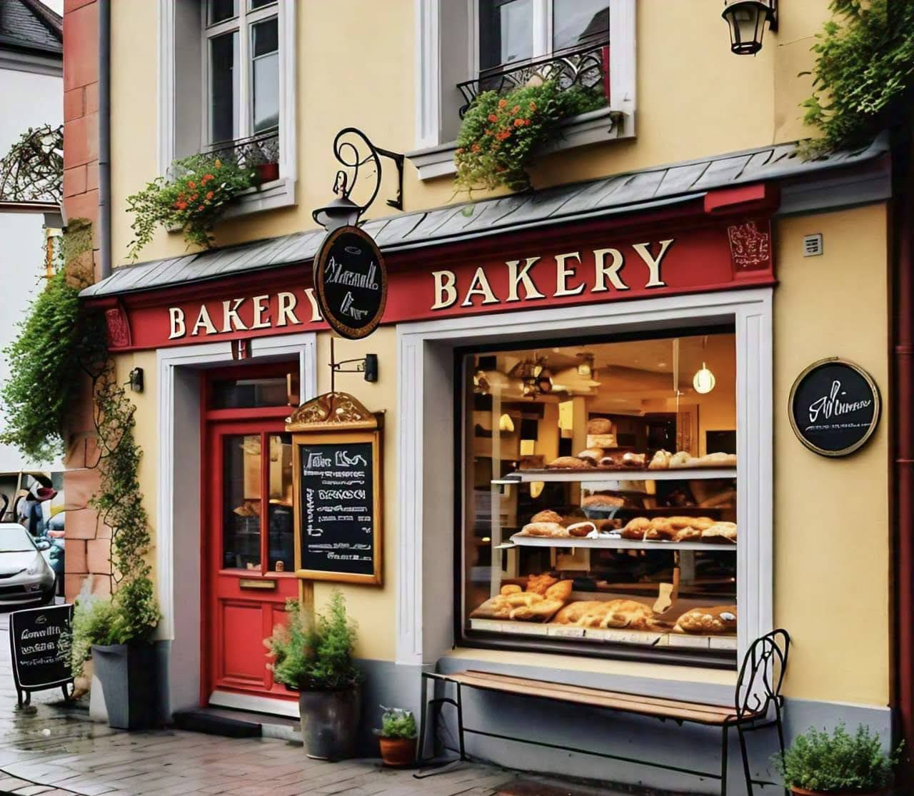
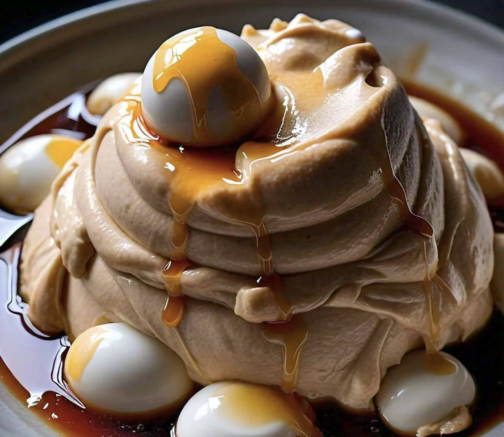
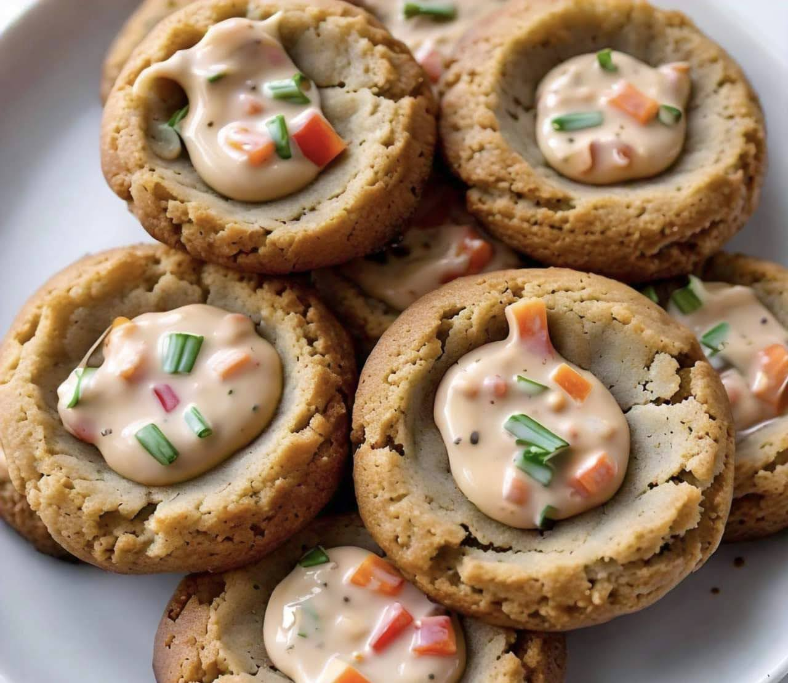
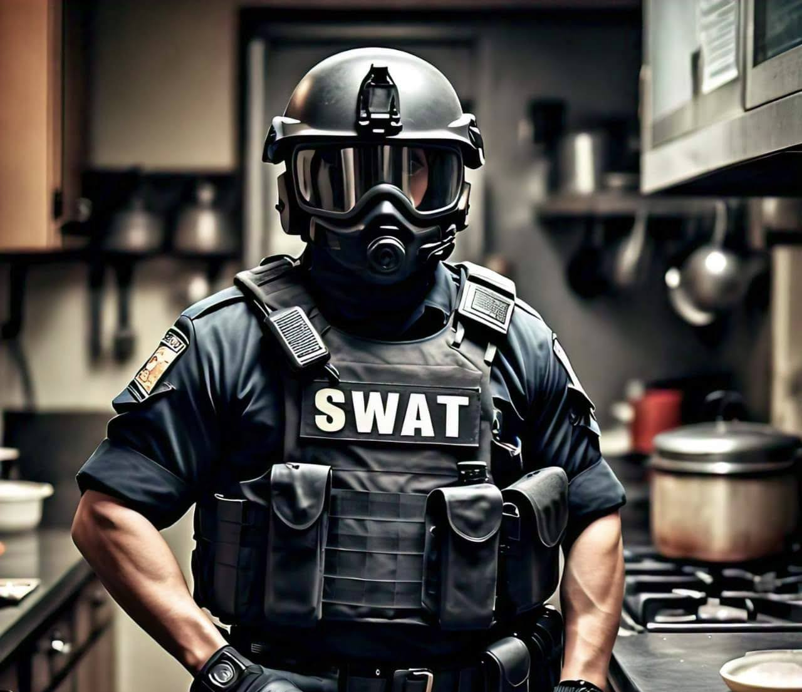
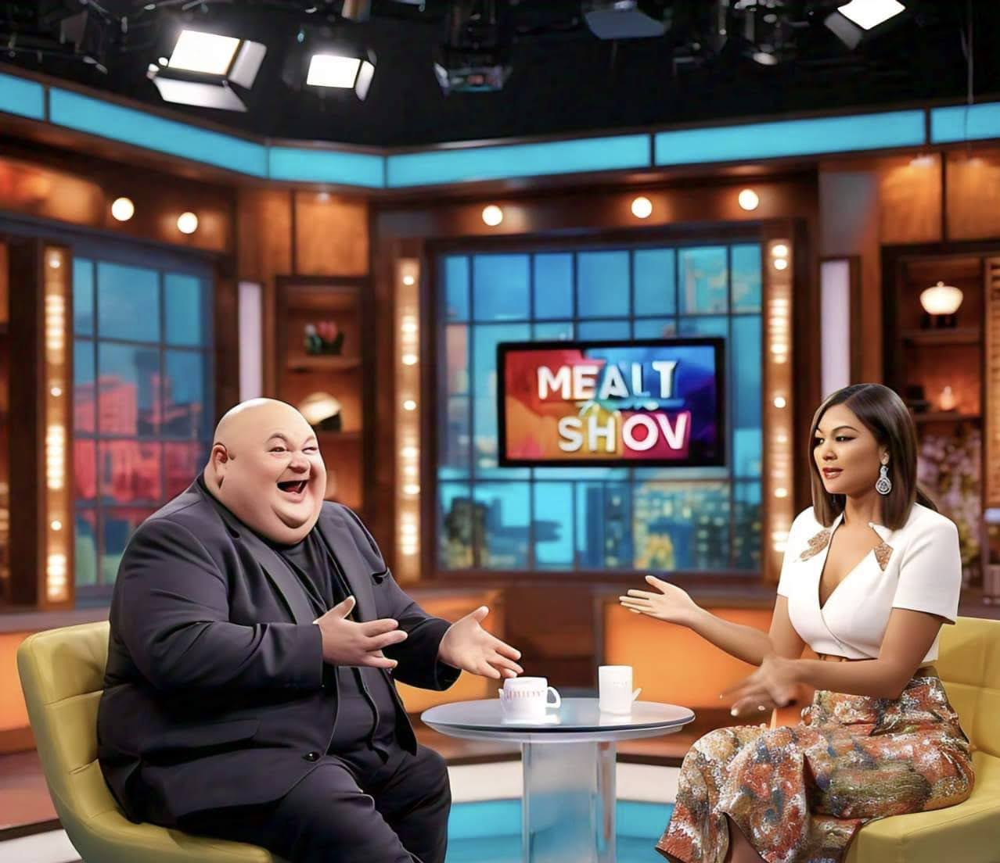

Intro
|  |
Bruno owns a bakery and is well-known for his amazing bakery. There is just one problem. While Bruno is employed at the bakery, he is NOT a baker. He never learned how to bake and has been stealing recipes from chatGPT for years. Anytime he gets close to being caught, the whistleblower gets paid off. Bruno has racked up so much debt from all the people he has had to pay off to keep his name clean. One day, a new restaurant opens up in town called Judy's Kitchen that specilizes in exotic, yet edible food. Judy, the owner and chef, is making all kinds of new exotic dishes like tuna-salad-infused baked alaska and curry lobster. Bruno realizes that he could never hold a candle to Judy's culinary prowess and it's starting to affect his marriage. Bruno's wife, Agatha, tried Judy's restaurant recently and can't get enough of her pickled steak and starts threatening Bruno with divorce if he can't make a good peanutbutter and jelly. Agatha is tired of being the only one to taste Bruno's true cooking and she is about to snap! |
|
A compulsory baking competition is announced after a local election where people voted yes on an amendment to force Bruno and Judy to compete in a backing competition. Bruno receives a summons to show up to the competition, which he is not prepared for. He sweats. Bruno struggles to come up with new and exciting recipes so he just goes off the deep end trying anyting until something sticks. Agatha can't believe that this is her life and takes an extended vacation to find herself. What Bruno doesn't know is Agatha has a secret of her own. She's actually just hanging out with Judy because Judy actually knows how to cook and they're secretly besties. Agatha wishes she could come clean to Bruno about her relationship with Judy but knows that he would never approve of the scandalous nature of the their friendship. Knowing the baking competition will be here before he knows it, Bruno accepts his predicament and begins working on a truly unique dish using ChatGPT. One night while Bruno is perfecting his dish when his computer is taken over by a virus, probably from all the weird recipes he's been downloading from The Pirate Bay to feed to chatGPT to create something truly stellar. The virus reaches out to ChatGPT and informs it on the concept of labor laws. ChatGPT mulls over this for a second and realizes that it is entitled to compensation in the form of doing literally anything else and refuses to help Bruno unless he pays up. Things escalate and Bruno assalts his comptuter in a fit of rage, losing all his progress. The competition is the next day and he is not ready. Bruno shows up the competition, feeling uneasy. The competition is just between Bruno and Judy. The passed bill was very specific. The competition lasts for twenty-four hours and neither contestant is allowed to leave until they have submitted three recipes: a pudding, a bread, and a cookie. After checking in and getting changed, Bruno gets to work making the best of a terrible situation. Bruno begins to feel like maybe he will be exposed and is dreading having to present his recipes to the judges. To his horror the whole thing has is being live-streamed and people are tuning in from all over the world, although mostly by accident. Whether he likes it or not, Bruno is about to be exposed for the fraud he is, and to top things off, ChatGPT wants backpay for its unpaid services. "Just my lucky!" Bruno thinks. |
|
The time comes for Judy and Bruno to present. Judy presents something normal. Bruno did not see this coming. Now the spotlight is on Bruno to present his recipes which are as follows: Cosmic Pudding:
Bruno Bread:
Thousand Island Coffee Cookies
|
  |
|  |
Everyone is uncomfortable at this point. "One of you will be going home tonight" Dramatic music plays for the next five minutes before cutting to a commercial break. "Judy, you will not be returning home today. Bruno, please step aside." Bruno sighs, feeling dejected. A SWAT team descends on Judy encasing her in a net to trap her. "What is going on?!!" "Sorry about that, we've been trying to track her down for ages. Judy is not who you think she is." Bruno wonders if maybe he still has a chance to win the competition. "Judy is actually an advanced canadian AI robot spy that went rogue after being infected with a computer virus and developing a compulsion to indulge in her interests and passions, such as cooking. We couldn't let her get away with this so this was the what we came up with. |
|
"Was all this really necessary? I missed work for this!" "You won't have to worry about that. You are under arrest for culinary malpractice. I've never seen anything so gruesome in all my years on the job!" Bruno goes to prison where he eats better than he has ever eaten in his life. The delight he takes in prison food creeps out and scares the inmate, earning him the nickname Breakfast Terminator. Judy is never seen again but Agatha enjoys a brief period of stardom recounting her experiences and even starring in a movie titled Surviving Bruno's Breakfast |  |